Pharloom · 30 consejos
Hollow knight Silksong

Notas de campo de Shakra, cartógrafa de Pharloom, de exploradora a exploradora.
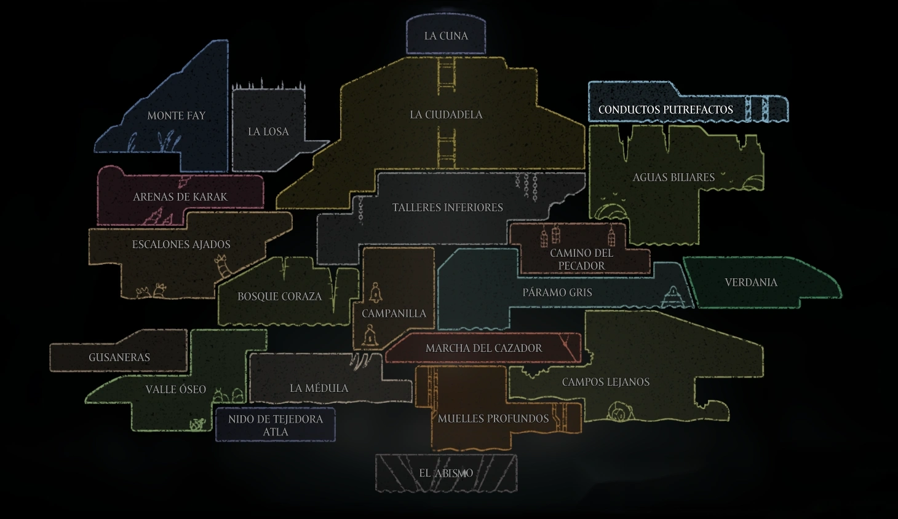
¡Vaya, pero qué sorpresa! No suelo ver a muchos viajeros por estos senderos tan peligrosos, y menos con un aspecto tan singular como el tuyo. Déjame presentarme: me llamo Shakra. Soy cartógrafa y ando recorriendo este resonante reino en busca de mi maestro. No sé de dónde vienes ni qué te trae a Pharloom Reino donde se desarrolla Hollow knight: Silksong , pero como veo que llevas un arma y estás dispuesta a explorar, déjame compartir contigo lo que he ido anotando en mis mapas.
Toma asiento un momento junto a mis pergaminos. Te daré unos cuantos consejos de exploradora a exploradora para que sobrevivas a tus primeros pasos:
No encontré ningún consejo con eso. Prueba con otra palabra.
Consejo numero 1: No te confíes, que este lugar muerde con fuerza
▼Ten los ojos bien abiertos en tus viajes. Este reino no perdona los descuidos; en la mayor parte de los caminos que vas a recorrer, un solo golpe de los enemigos te arrebatará dos máscaras de salud en vez de una. Avanza con pies de plomo.
Consejo numero 2: Aprende a encajar esos artilugios en tus bolsas
▼He visto muchas herramientas extrañas esparcidas por Pharloom Reino donde se desarrolla Hollow knight: Silksong . Tienen propiedades magníficas, pero ten en cuenta que ocupan un espacio sagrado en tus ranuras, y tus pertenencias son limitadas. Elige con inteligencia qué vas a cargar antes de meterte en problemas.
Consejo numero 3: Mantén los bolsillos llenos de Rosarios Moneda de Pharloom y fragmentos de coraza recurso para reparar herramientas
▼Si vas a negociar con los mercaderes o quieres mejorar tu equipo, vas a necesitar rosarios Moneda de Pharloom ; esa es la moneda principal en Pharloom Reino donde se desarrolla Hollow knight: Silksong . Tampoco ignores los fragmentos de coraza: recurso para reparar herramientas sin ellos, no tendrás el material necesario para hacer funcionar tus herramientas cuando la situación se ponga fea.
Consejo numero 4: El salto con rebote va a requerir práctica
▼He estado observando cómo te mueves. Tu técnica para rebotar sobre los enemigos usando tu arma tiene un compás diferente en estas tierras, así que te sugiero practicar ese "pogo" hasta que tus pies se acostumbren al peso del aire de Pharloom Reino donde se desarrolla Hollow knight: Silksong
Consejo numero 5: Si oyes un lamento diminuto, busca en los rincones
▼Hay unas pequeñas criaturas atrapadas y ocultas por todo el mapa llamadas
Pulgas
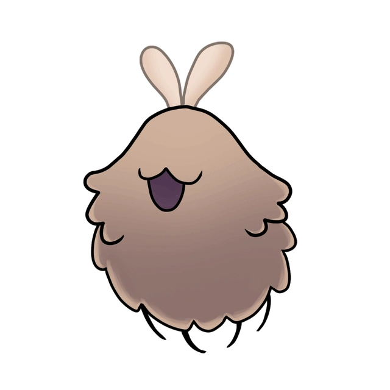
. Si te tomas la molestia de liberarlas, créeme que tu esfuerzo valdrá la pena; hay quienes ofrecen grandes recompensas cada vez que rescatas a un buen número de ellas.
Consejo numero 6: Amarra bien tu fortuna si presientes el peligro
▼Escúchame bien, que esto le cuesta la ruina a muchos extranjeros: aquí, si caes en batalla, ir a buscar el capullo que dejas atrás no será suficiente para salvar tus ahorros. Perderás tus rosarios Moneda de Pharloom a menos que los hayas atado firmemente antes de morir. Hazlo si ves que el camino se pone difícil.
Consejo numero 7: Agiliza tus movimientos usando la seda del reino
▼He visto que puedes manifestar técnicas fascinantes con los hilos. Esas habilidades consumen mucha menos seda que un enlace de curación completo. Asegúrate de preparar las correctas para cada gran peligro y no desperdicies tus ranuras de forma innecesaria.
Consejo numero 8: Encuentra el momento justo para tejer tus heridas
▼Tienes una técnica impresionante para enlazar tus hilos en pleno aire y sanar tres máscaras al instante. Pero ten mucho cuidado: si un enemigo te golpea y frustra tu concentración, perderás una cantidad enorme de seda para nada.
Consejo numero 9: Las herramientas rojas son para el ataque
▼Si lo que buscas es aumentar tu fuerza ofensiva, estas van a ser tus mejores aliadas. Consumen fragmentos de coraza y, por lo que he visto, tú misma puedes fabricarlas cada vez que encuentres un banco para descansar.
Consejo numero 10: Las herramientas azules alteran tus reflejos
▼Estas piezas potencian tus capacidades de forma pasiva. Lo más interesante es que puedes combinarlas con tus herramientas rojas o tus artes de seda, logrando incluso que tus maniobras de pura evasión y movilidad dañen a los enemigos.
Postales de Pharloom
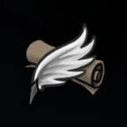
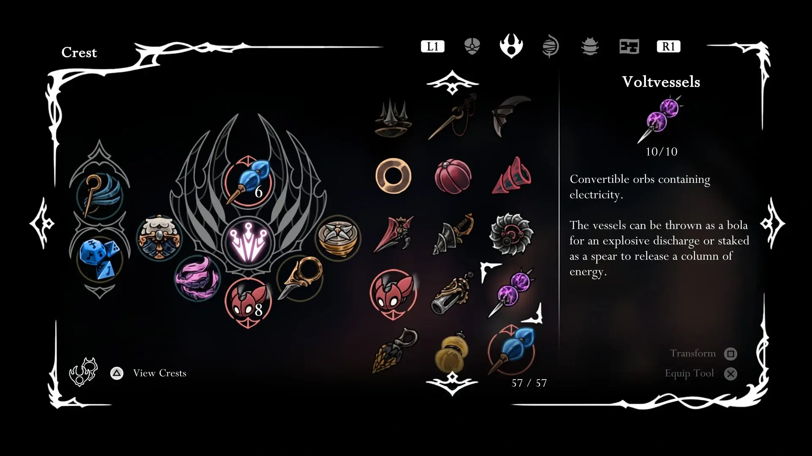
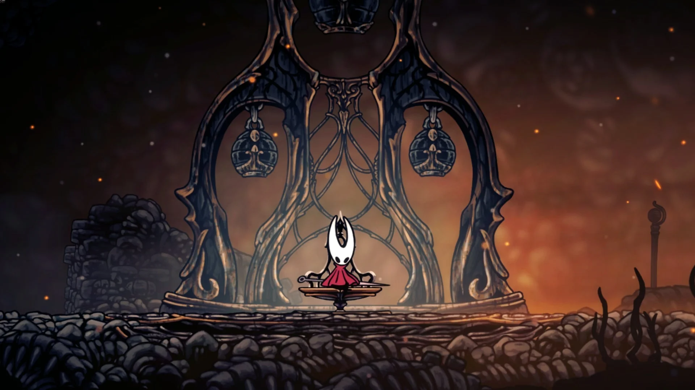
Consejo numero 11: Las herramientas amarillas te ayudarán a explorar
▼Estas son herramientas más variadas y sutiles. No están pensadas para el golpe directo en el campo de batalla, sino para ayudarte con la rutina del viaje: recolectar recursos, orientarte o encontrar secretos en el entorno.
Consejo numero 12: Aquí todo se mueve a una velocidad endiablada
▼El compás de los combates en Pharloom Reino donde se desarrolla Hollow knight: Silksong es frenético. Las criaturas son sumamente agresivas y letales; no puedes quedarte quieta a ver qué pasa. Tendrás que aprender a ser mucho más veloz, tanto para lanzar tus estocadas como para sanar tus heridas.
Consejo numero 13: Atiende a los tablones
▼Presta atención a los carteles de anuncios y a los lugareños que te cruces en las estaciones. Te encomendarán sus "deseos"; si cumples con lo que piden, te recompensarán con herramientas raras, recursos valiosos e historias sobre el pasado de este mundo.
Consejo numero 14: Busca al maestro de las agujas para mejorar tu aguja
▼Si quieres que tu arma corte con verdadera fuerza, vas a tener que desenterrar un recurso sumamente raro: el aceite pálido. Si logras conseguirlo, llévaselo a
Plinney
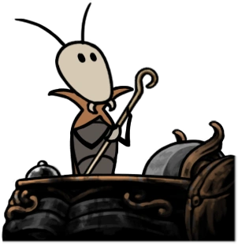
en el pueblo de Campanilla; él se encargará de afilar tu hoja para aumentar su daño.
Consejo numero 15: Memoriza las caras de quienes habitamos aquí
▼En tu viaje te cruzarás con aliados para cada necesidad. Scrounge comercia con reliquias en Campanilla. Yo, Shakra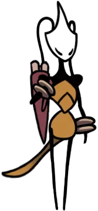
, te proveeré de mapas e incluso podríamos cruzar armas juntas si coincidimos en algún peligro. Para tus caídas, Styx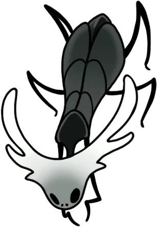
en el Camino del Pecador te dará Devorasedas para recuperar tu capullo; Mooshka te recompensará por las pulgas y te ofrecerá su caravana; Nuu te entregará el diario de la cazadora, y la Alfilera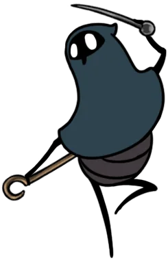
te adiestrará en los Escalones Ajados.
Consejo numero 16: Si te pierdes buscando a los pequeños, busca al rastreador
▼¿Se te resiste encontrar a esas pequeñas criaturas atrapadas? Busca a un tipo llamado Vog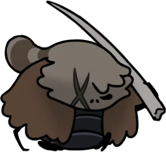
en los Conductos Putrefactos. Él conoce los recovecos del subsuelo y te venderá mapas con las ubicaciones exactas de cada zona.
Consejo numero 17: No dejes tareas a medias si el mundo cambia
▼Mis mapas me dicen que este viaje parece dividirse en grandes etapas o actos. Explora a fondo y haz todo lo que puedas en cuanto tengas la oportunidad; si permites que la situación del reino avance, algunas puertas y secretos se cerrarán para siempre.
Consejo numero 18: Busca el nido secreto en la Gruta Musgosa
▼Presta atención a los relicarios de memorias, pues sirven para expandir el poder de tus blasones. Si desciendes hasta el nido de la tejedora Atla en la Gruta Musgosa, encontrarás a Eva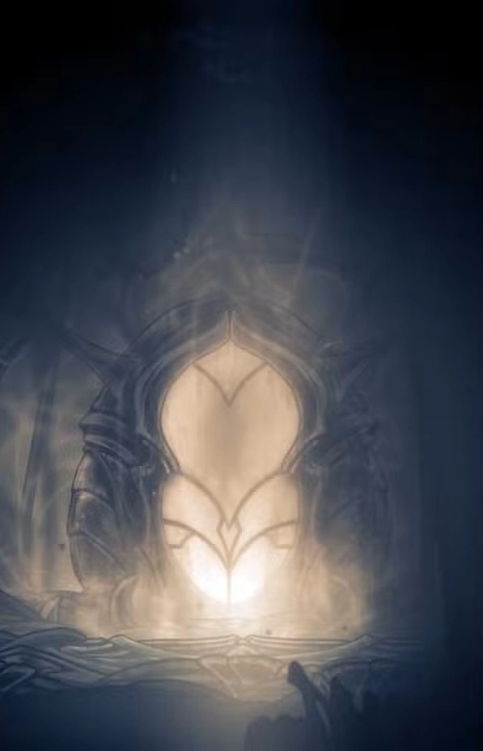
. Cuantos más relicarios le lleves, más mejorará tus capacidades.
Consejo numero 19: Sácale provecho a la evasión aérea para extender tus combos
▼A diferencia de otros viajes donde esquivar es solo una maniobra defensiva en el suelo, aquí tu impulso en el aire es una herramienta de posicionamiento crucial. No lo uses solo para huir; si esquivas hacia el enemigo justo después de un pogo o un ataque diagonal, puedes cancelar la animación de recuperación, quedar perfectamente posicionada a su espalda y continuar golpeando sin perder el impulso ni tocar el suelo.
Consejo numero 20: Usa el llamado de las bestias para volver sobre tus pasos
▼Aprenderás una técnica de transporte bastante tarde en tu aventura, pero cuando la tengas, no la dejes guardada. Úsala cada vez que necesites regresar volando al entorno de la última vía campana que hayas visitado.
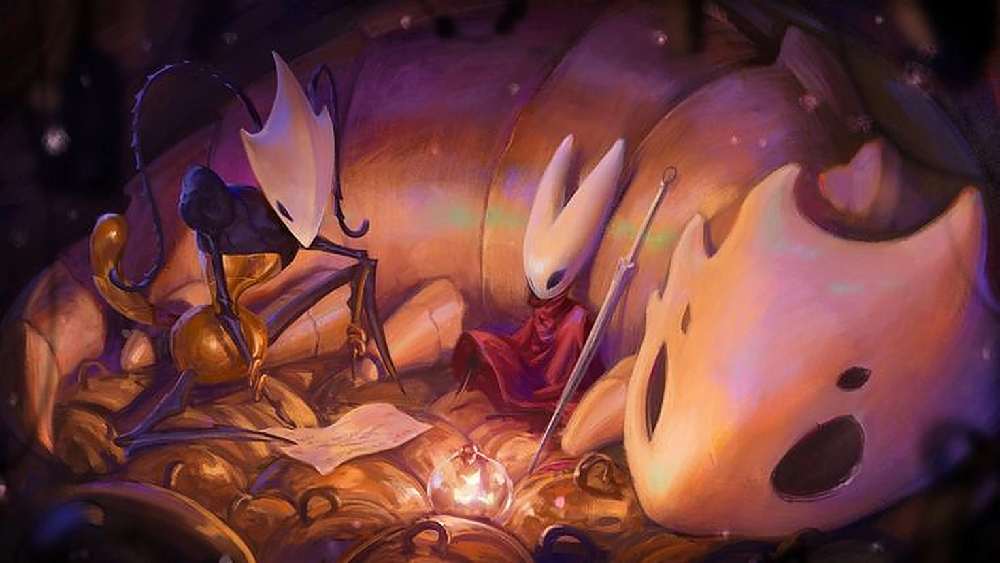
Consejo numero 21: Golpea las paredes sospechosas para revelar pasajes de seda ocultos
▼PharloomReino donde se desarrolla Hollow knight: Silksong es un reino construido sobre capas y tejidos antiguos, lo que significa que la arquitectura esconde muchos más secretos de lo normal. Si notas que una pared suena hueca al golpearla o ves hilos sueltos brotando de una grieta, destruye el muro. Muchas veces no solo encontrarás rosarios, sino también capullos ocultos cargados de seda que te rellenarán las reservas al instante antes de una zona peligrosa o una emboscada.
Consejo numero 22: Busca la bendición de los Corazones de Seda
▼Si logras hacerte con estos talismanes, tu energía de seda se regenerará de forma automática en un nivel por cada corazón obtenido. Hay tres en total ocultos por el reino; te sugiero mantener los ojos abiertos.
Consejo numero 23: Blason de la cazadora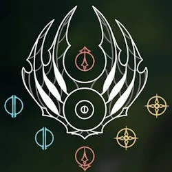
▼
Este blasón te otorga un rebote en ángulo diagonal, con un alcance y velocidad de ataque bastante estándar, y tu curación no hace nada especial. Sin embargo, si dejas que Eva lo examine, tu daño puede incrementarse hasta un 36%.
Consejo numero 24: Blason de la parca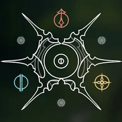
▼
Con esta configuración, tu rebote irá directo hacia abajo. Te dará un gran alcance a costa de una velocidad de ataque bastante lenta. Al sanarte, aparte de cerrar tus heridas, harás que tus golpes desprendan pequeños orbes que te devolverán seda al tocarlos.
Consejo numero 25: Blason del errante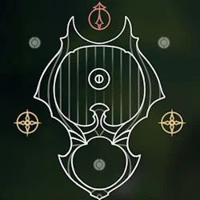
▼
Tu pogo irá hacia abajo, con un alcance sumamente corto pero con la velocidad de ataque más endiablada que he visto en mi vida. Tu curación será normal, pero si mantienes tus reservas de seda al máximo, tus ataques normales golpearán con una fuerza demoledora.
Consejo numero 26: Blason de la bestia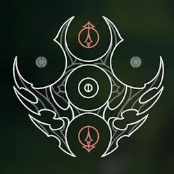
▼
Tu rebote trazará un arco decreciente. Tiene un alcance corto y una velocidad común, pero su curación tiene un truco: no hará efecto hasta que asestes tres golpes seguidos. A cambio, tu arma ganará un alcance inmenso y una cadencia de ataque temible.
Consejo numero 27: Blason de arquitecta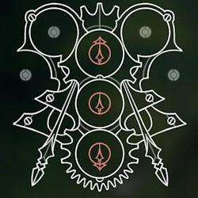
▼
Este te permite un rebote diagonal que puedes cargar para ganar potencia y distancia. Tu daño se dividirá en múltiples impactos pequeños. ¿Lo más útil? Si intentas sanarte mientras mantienes la mirada hacia ARRIBA, en lugar de curarte, repararás tus herramientas dañadas.
Consejo numero 28: Blason de la bruja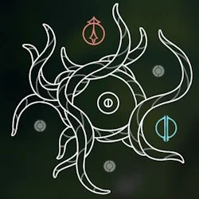
▼
Tu pogo irá hacia abajo con un alcance respetable, aunque algo pausado. Al usar tu hilo para sanar, brotarán tentáculos de tu cuerpo que solo te curarán si impactan contra el rival, infligiéndole un daño atroz mientras tú te recuperas.
Consejo numero 29: Blason de la chamana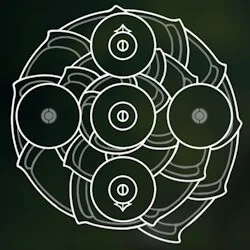
▼
Al usar tu pogo, lanzarás un ataque a distancia corta hacia abajo, propulsándote ligeramente hacia arriba; con tu enlazamiento irás directamente a clavarte al suelo para curarte.
Consejo numero 30: Olvídate de mis mapas y descubre el mundo por ti misma
▼Sé que vendo mapas para ganarme la vida, viajera, pero te diré un secreto: la verdadera gloria de PharloomReino donde se desarrolla Hollow knight: Silksong no está en seguir las líneas que yo he dibujado, sino en perderse y comprender este reino por tus propios medios. ¡Ve y escribe tu propia historia!
¿Ya terminaste con Shakra?
Vuelve a Hallownest
Zote el Todopoderoso tiene 27 preceptos (y muchísimo ego) para ti.
Ir con Zote → Consejo al azar ✦